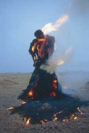

Immagini

Duemila immagini selezionate e organizzate in oltre venti volumi, sintesi di decine di migliaia di fotografie accumulate nel corso del tempo attorno ad un unico tema generale: il rapporto uomo-natura.
In alcuni casi è la natura ‘naturale’ che sfida o subisce il rapporto con l’opera della civiltà dell’uomo, come, ad esempio, in Arca Naturae (il Museo dove vengono conservati gli animali), o in La Città dei quattro fiumi (la forma più complessa del rapporto) e, soprattutto, nei volumi Il Segno dell’acqua e Omaggio a Goethe. In questo, il rapporto uomo-natura è visto, alla luce della concezione olistica del grande poeta tedesco, attraverso i filtri dell’arte e della scienza.
In altri casi, è la natura umana chiamata al confronto con le numerose forme che ha assunto, nei secoli, la sua auto-rappresentazione: statue, armature, bambole e manichini, fino ai moderni robot, e le numerose forme antropomorfiche create casualmente dalla natura o dall’artificio, accanto a umani in scena nei luoghi deputati alla rappresentazione, come il set cinematografico o il palcoscenico del rock, oltre a strade e piazze dei conflitti sociali, oppure negli spazi più intimi della quotidianità. La sintesi di tutto ciò è rintracciabile nel recente (2006) L’Eterno gioco del doppio, Dario Lanzardo Fotografo.